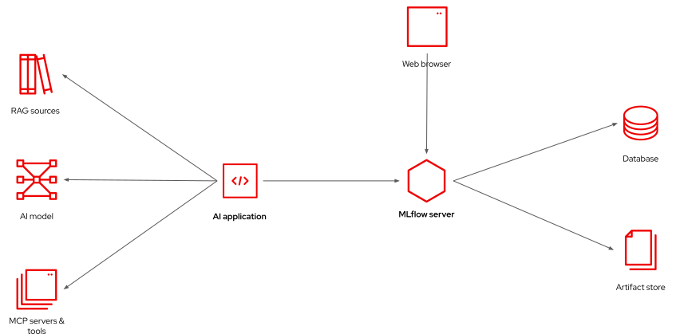

Introduction to MLflow in Red Hat OpenShift AI
- Objective
-
Understand MLflow’s features for agentic applications and its place as part of Red Hat OpenShift AI.
| Work In Progress |
Introduction to MLflow
According to their own web site:
MLflow is the largest open source AI engineering platform for agents, LLMs, and ML models. MLflow enables teams of all sizes to debug, evaluate, monitor, and optimize production-quality AI applications while controlling costs and managing access to models and data.
MLflow provides fundamental observability and experiment tracking capabilities which enable developers and data scientists to ensure their applications work beyond a demonstration and perform as expected in production.
MLflow capabilities support developers and data scientists optimizing their applications for cost and accuracy, for example as they select smaller models or tuning their prompts, so they are confident they did not introduce unacceptable performance degradation.
It is a known fact that AI-enabled applications usually degrade over time, because user behavior and input data changes. MLflow enables continuous evaluation of runtime performance of applications, so improvements can be made before users start complaining.
High-level architecture of MLflow
MLflow is based on a client/server architecture. A client application, which is instrumented by using either the MLflow SDK or OpenTelemetry, sends observability data, such as metrics and traces, to an MLflow server, which stores that data and provides HTML-based visualization of it.

The application is responsible for interacting with ML models or, in the case of GenAI applications, with LLMs. The GenAI application is also responsible for interacting with MCP servers, providing local tools, or connecting to RAG data sources.
It does not matter whether the "application" is a user-facing application, an autonomous agent, or a training or evaluation pipeline. It just needs to send observability data to an MLflow server.
Client applications can also consume data from MLflow servers, for example to compare metrics from different training sessions and determine which one provided better outputs, or to track performance degradation, over time, for a production application.
The MLflow server makes use of a relational database and an artifact store to record artifacts such as model weights (in case of training ML models) or prompts (in case of GenAI applications). It is recommended that the artifact store be an S3 service, for scalability.
The relational database stores metadata and tags which enables the MLflow server to relate all inputs, outputs, and observability data from a single training session or from a single conversation with an LLM to each other. A PostgreSQL database is a popular option for the MLflow database.
MLflow for Generative AI Applications
MLflow started by supporting Machine Learning (ML) applications and data scientists, offering features to support model training and tuning. Like many tools focused on ML, MLflow was initially very Python-centric.
More recently, MLflow added features for supporting Generative AI (GenAI) applications and agents. By that time, MLflow was also offering native SDKs for other programming languages, such as TypeScript and Java.
Nowadays, MLflow also supports the OpenTelemetry standard, which enables applications using any programming language and any kind of infrastructure to submit observability data to an MLflow server.
MLflow experiments and workspaces
Experiments are a key concept in MLflow. An experiment is a grouping of observability data, from multiple runs. Each run collects all data obtained while running an AI application once. Runs may take multiple forms, and the ones we are interested in for this course are traces, which record the interactions between an agent and a model.
A workspace is a grouping of experiments. Typically, a workspace corresponds to an application, and experiments correspond to running the application with different configuration parameters, such as different models, or different system prompts.
Then, inside an experiment, each run connects an input to its output, and provides metrics and other observability data from that run. Frequently there are multiple runs, such as multiple traces, which started from exactly the same input data because LLMs are inherently non-deterministic.
MLflow Features in Red Hat OpenShift AI
MLflow is a comprehensive platform for managing AI applications (AIOps) but it does not provide everything data scientists, software developers, and AI engineers need to develop and manage their ML or GenAI applications. Providing "everything" is the stated goal of Red Hat OpenShift AI (RHOAI). While MLflow provides many features which are useful by themselves, others work better when paired with tools outside of MLflow.
Sometimes, there’s overlap between a feature from MLflow and a feature from another component of RHOAI, for example the Model Registry which in RHOAI comes from KubeFlow. All features from MLflow are available from RHOAI but not all of them may be integrated with the RHOAI dashboard and with other features of RHOAI.
The upstream web interface from MLflow is available unchanged, as a stand-alone application, from RHOAI. Users are free to continue using this interface. But you may find it is easier and more convenient to use the subset of features made available from RHOAI dashboard, because it facilitates using these features integrated with other components and features from RHOAI.